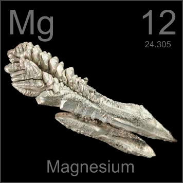

HOME
PREVIOUS
NEXT

Magnesium
Atomic Weight: 24.305
Density: 1.738 g/cm3
Melting Point: 650 °C
Boiling Point: 1090 °C
These magnesium nodules grow during the refining process. Usually they are melted down into useful products such as lightweight race car components and fire starters. Thin strips light easily and burn brightly.